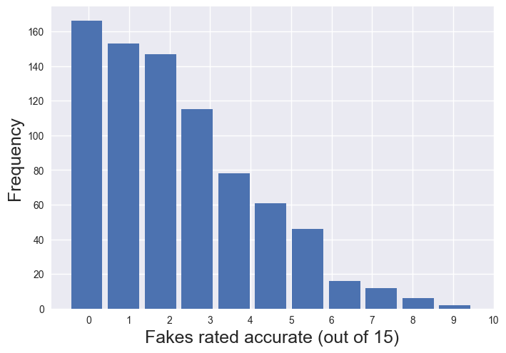
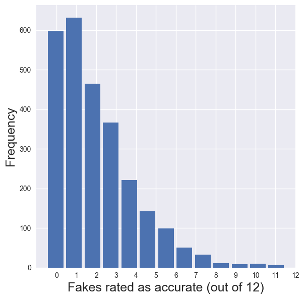
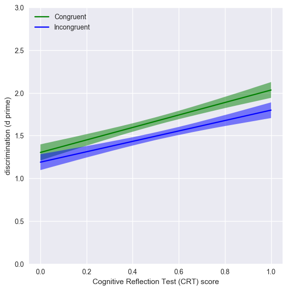
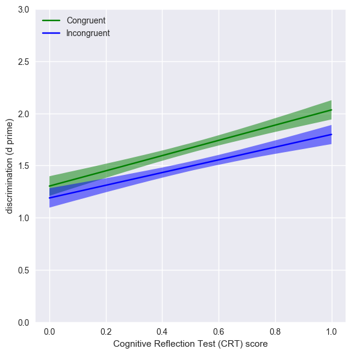

Lazy and biased? Reanalysis of Pennycook & Rand's (2018) data
A light reanalysis of Pennycook, G., & Rand, D. G. (2018). Lazy, not biased: Susceptibility to partisan fake news is better explained by lack of reasoning than by motivated reasoning. Cognition. (OSF repo).
This paper claims that lack of cognitive reflection drives people's susceptibility to fake news, not partisan bias. Dan Kahan (here) suggests that the data really show that nobody falls for fake news. Because the authors provide the raw data, I thought I'd look into this by plotting the number of fake stories each participate rated as 'accurate':
 Conclusion: These histograms disconfirm the suggestion that 'nobody' falls for fake news. In these studies, the majority of people fall for some fake news. While it is true that the 'fake news' stories used in the study were, on average, rated as low in accuracy, many individual stories by many individual participants were rated as accurate. People fell for them.
Lazy and biased
The original study conducted several analyses. The key one for testing their theory, in my opinion, is to calculate sensitivity to story accuracy for each participant - to ask, in effect, how good they are at discriminating fake from real news. This is essential to pull out general effects of people's willingness to rate all stories they see as accurate (or inaccurate) from their specific ability to tell fake from real. (This separation of sensitivity from response bias is fundamental to signal detection theory).
Pennycook & Rand do conduct a discrimination analysis, but they don't do the (in my opinion) key data visualisation and they use zero-normed scoring so you can't tell from their measure if people have any ability to tell real from fake (which also seems important to know). So, with their data I reanalysed the data to calculate a measure of discriminative ability and plot it against cognitive reflection (measured by CRT score) for bias-congruent and bias-incongruent news stories (and neutral news stories, for study 1 only).
 

Conclusion: you can see the clear positive relation between cognitive reflection and discrimination. As Pennycook & Rand discuss, higher CRT is associated with a greater ability to tell real from fake. However, this analysis also suggests that there is an effect of bias - in contrast to the title of the original study. Discrimination scores are higher for incongruent news - suggesting that people find it harder to tell fake from real for news which aligns with their preconceptions.. Discrimination is higher for news which aligns with people's preconceptions. Additionally, it looks - at least for study 1 - that this effect of bias interacts with cognitive reflection, so that for individuals scoring low on cognitive reflection partisan bias doesn't much affect their discrimination, but for individuals higher in cognitive bias, partisan bias particular raises ability to discriminate real from fake for news which doesn't does align with their preconceptions (incongruent items).
Note also that for the full range of cognitive reflection, for all news types, the average participant's sensitivity was well above zero. Even for the least reflective participants, and for stories which play into their partisan bias, they retain some ability to discriminate real from fake news.
The statistical significance of these effects can be confirmed using regression modelling (although for exploratory analysis NHST is of debatable value). Details are in the notebook link below. Thanks to Mate Gyurkovics for help with regression modelling.
Full details of this analysis available in a Jupyter notebook, including caveats, acknowledgements and unanswered questions.
This github repo provides all the files and code for running the analysis
Tom Stafford, 2018. Theme adapted from Matt Webb's.